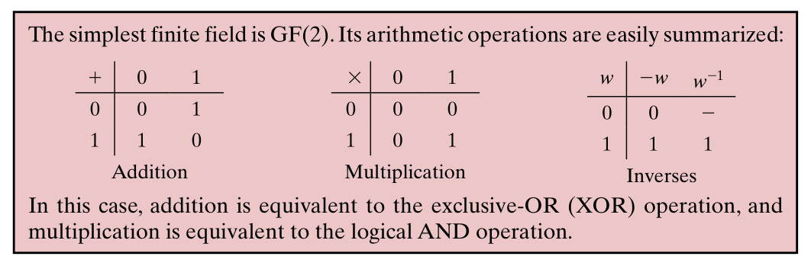
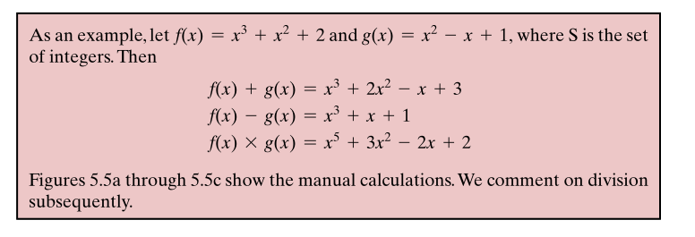

Killian O’Brien
6G6Z0024 Applied Cryptography 2024/25
Lecture Week 05 – Wed 30 October 2024
\(\text{GF}( m )\) notation named for Galois Field after French mathematician Évariste Galois. It stands for a finite field containing \(m\) elements.
In cryptography, two of the important finite fields are \(\text{GF}(2)\) and, more generally, \(\text{GF}(p)\), for a prime \(p\).
\(\text{GF}(2)\): This just consits of the binary elements \(0\) and \(1\), under the following rules.

So for \(\text{GF}(p)\) we have a model \(\mathbb{Z}_p\). But what about \(\text{GF}(m)\) for other useful values of \(m\) such as \(m = 2^n\)?
For this we will need polynomial arithmetic.
A polynomial of degree \(n\) is a function \(f(x)\) of the form \[f(x) = a_n x^n + a_{n-1} x^{n-1} + \dots + a_1 x + a_0 = \sum_{i=0}^n a_i x^i.\]
The coefficients \(a_i\) will be coming from some specified set such as the integers \(\mathbb{Z}\), modular integers \(\mathbb{Z}_m\) or some finite field.
We will be interested in the polynomial object \(f\) itself, not so much in its particular values. So the \(x\) will remain mostly unspecified, or indetermined.
 Polynomial arithmetic includes the operations of addition and multiplication of polynomials. For example, with coefficients from the set \(S\) of integers
Polynomial division